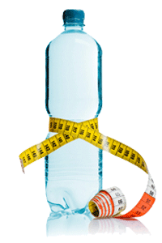

Содержание статьи
1. Главная страница
2. Преимущества ПП
3. Принципы в рамках ПП
4. ПП: меню на неделю
5. Варианты завтраков, обедов и ужинов
6. Советы напоследок
7. Невозможно НЕ похудеть
8. Вредные продукты
9. Полезные советы
|
Советы напоследок

Не забывайте о питьевом режиме. Худеть на правильном питании можно, только если употреблять от 2 л воды в день. Это несложно, просто развивайте в себе новую привычку – каждый час выпивать стакан воды.
Приучите себя есть не перед телевизором или книгой, а просто наедине с собой, получая удовольствие от каждого кусочка пищи.
Постепенно вы заметите, что совершенно не нуждаетесь во вредных продуктах или обильных алкогольных возлияниях. А если сочетать правильное питание с занятиями спортом, то отражение в зеркале будет радовать вас и вдохновлять. ПП не имеет ограничений по срокам, каждый может придерживаться его столько, сколько считает нужным – даже всю жизнь.
Главное – вы получите здоровье, отменное самочувствие и привлекательную фигуру.
|